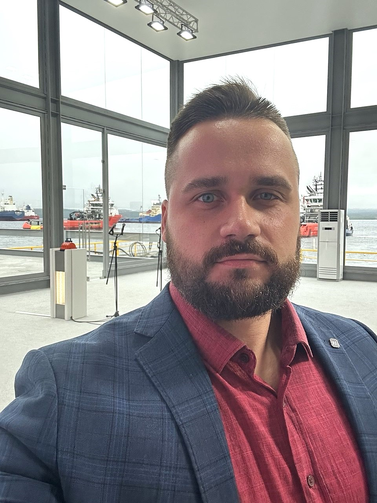

Сетевой инженер | Специалист по ИБ | Python-разработчик
Более 9 лет
Комплексное администрирование сетевой инфраструктуры и обеспечение информационной безопасности предприятий.
Опытный специалист с более чем 9-летним стажем в области сетевых технологий и информационной безопасности.
Работаю с транспортными сетями с коммутацией пакетов (оборудование Cisco, Juniper, Allied Telesis, Metrotek, Nateks), транспортными сетями с коммутацией каналов (оборудование СУПЕРТЕЛ: КЦС, МП, СМД, xDSL терминалы; Морион: ОГМ-30). Организую эксплуатацию и настройку серверного оборудования (Aquarius, WatchGuard Firebox), администрирование почтовых серверов.
Провожу организационно-технические мероприятия для обеспечения информационной безопасности: - контроль использования внешних носителей информации - ограничение доступа пользователей - ограничение доступа к чувствительной информации - организация электронного журналирования действий пользователей - использование защищенных протоколов - организация удаленного администрирования - организация двухфакторной аутентификации - установка и настройка средств контроля за подключаемыми носителями информации - ограничение загрузки оборудования с внешних носителей - ревизии учетных записей - организация выделенных сетей управления - исключение НСД к оборудованию - настройка тайм-аут сессий - обновление ПО и антивирусных баз - организация принудительной антивирусной проверки носителей информации - эксплуатация СКЗИ.
Работаю в создании автоматизированных систем на Python, с базами данных, контейнеризацией приложений, написанием тестов, настройкой и развёртыванием серверного окружения.
Эксплуатирую электроустановки связи, серверное оборудование (сети переменного и постоянного тока), организую монтаж и прокладку распределительных и групповых сетей. Являюсь ответственным за электрохозяйство организации. Имею V группу по электробезопасности (до и выше 1000 В).
Есть опыт разработки технических заданий и сопровождения закупочных процедур по 44-ФЗ.